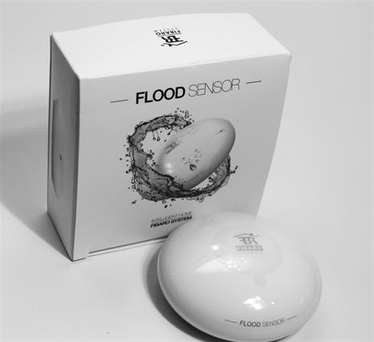
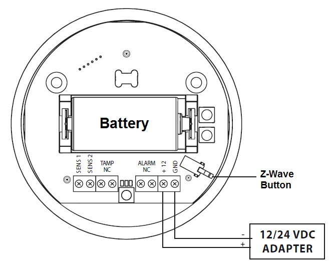

FIBARO flood sensor¶
Fibaro 857934005140 Flood Sensor, White¶

Brief information¶
- Compatible with any Z-Wave or Z-Wave+ Controller
- Supports protected mode (Z-Wave network security mode) with AES-128 encryption
- May be connected to any alarm system (potential free output terminal)
- Extremely easy installation - simply put on a surface prone to flooding
- May be installed anywhere - flood sensor’s contacts extended with a wire
- Battery or VDC powered. When connected to an external, VDC power source, the battery serves as an emergency power source
- Theft protection - tilt is reported to the Z-Wave network or alarm system’s main controller
- Two operating modes - flood/temperature sensor or just a temperature sensor.
- Alarm is signalled by sound, visual indicator (LED diode) and Z-Wave
Specification¶
Power Supply: 12 - 24V DC
Battery: CR123A
- RF range:
- 868.4 or 869.8 MHz EU;
- 908.4 or 916.0 MHz US;
- 921.4 or 919.8 MHz ANZ;
- 869.0 MHz RU;
Operating range: up to 50m outdoors
Operating temp: 0 - 40 oC
Measure temp: -20 - 100°C
Inclusion/Exclusion to/from a network¶

- Put controller to Inclusion/Exclusion mode
- Press TMP button 3 times. Device will be included/excluded to/from zwave network.
Button action and events¶
- 1 press: select desired MENU option (in case MENU mode is active)
- 3 presses: add/remove or wake up
- Press and holding: enter the MENU mode (confirmed by visual indicator)
Factory reset¶
Resetting the Flood Sensor: Reset procedure deletes EEPROM’s memory, including all information on the Z-Wave network and the main controller.
- Make sure the Sensor is powered
- Press and hold the TMP button
- Wait 15-20 second for visual LED indicator to glow yellow (4th position the MENU)
- Release the TMP button
- Click the TMP button, once
- After few seconds the device will be restarted, which is signalled with the red visual indicator colour and acoustic signal
Configuration description¶
- Alarm cancellation delay
Parameter 1 (0x01)
Size: 2 bytes
- Value:
- Valid value: 0x0000 - 0x0E10
- Unit is second
Default: 0
- Acoustic and visual signals On / Off in case of flooding
Parameter 2 (0x02)
Size: 1 byte
- Value:
- 0x00: acoustic and visual alarms inactive
- 0x01: acoustic alarm inactive, visual alarm active
- 0x02: acoustic alarm active, visual alarm inactive
- 0x03: acoustic and visual alarms active
Default: 0x03
- Trigger level for associated devices
Parameter 7 (0x07)
Size: 2 bytes
- Value:
- 0x0001 ~ 0x0063: forced level
- 0x00FF: turn device on
Default: 0x00FF
- Alarm cancellation
Parameter 9 (0x09)
Size: 1 byte
- Value:
- 0x00: alarm (flooding) cancellation inactive
- 0x01: alarm (flooding) cancellation active
Default: 0x01
- Temperature measurement interval
Parameter 10 (0x0A)
Size: 4 bytes
- Value:
- Valid value: 0x00000001 ~ 0x0000FFFF
- Unit is second
Default: 0x0000012C (300 seconds)
- Temperature change level
Parameter 12 (0x0C)
Size: 2 bytes
- Value:
- Valid value: 0x0001 ~ 0x2710
- Unit is 0.01 oC
Default: 0x0032 (0.5 oC)
- Low temperature threshold
Parameter 50 (0x32)
Size: 2 bytes
- Value:
- Valid value: 0xD8F0 ~ 0x2710
- Unit is 0.01 oC
Default: 0x05DC (15 oC)
- High temperature threshold
Parameter 51 (0x33)
Size: 2 bytes
- Value:
- Valid value: 0xD8F0 ~ 0x2710
- Unit is 0.01 oC
Default: 0x0DAC (15 oC)
- Low temperature alarm indicator color
Parameter 61 (0x3D)
Size: 4 bytes
- Value:
- Valid value: 0x00000000 ~ 0x00FFFFFF
- RGB value setting
Default: 0x000000FF
- High temperature alarm indicator color
Parameter 62 (0x3E)
Size: 4 bytes
- Value:
- Valid value: 0x00000000 ~ 0x00FFFFFF
- RGB value setting
Default: 0x00FF0000
- Managing a visual indicator under standard operation
Parameter 63 (0x3F)
Size: 1 byte
- Value:
- 0x00: Visual indicator does not indicate the temperature
- 0x01: Visual indicator indicates the temp every measurement interval or wakeup (battery mode)
- 0x02: Visual indicator indicates the temp continuously (constant mode)
Default: 0x02
- Compensation for measured temperature
Parameter 73 (0x49)
Size: 2 bytes
- Value:
- Valid value: 0xD8F0 ~ 0x2710
- Unit is 0.01 oC
Default: 0x0000
- Alarm frame activation
Parameter 74 (0x4A)
Size: 1 byte
- Value:
- 0x00: Tamper alarm inactive
- 0x01: Button tamper alarm active
- 0x02: Movement tamper alarm active
- 0x03: Button and movement tamper active
Default: 0x02
- Visual and audible alarms duration
Parameter 75 (0x4B)
Size: 4 bytes
- Value:
- 0x00000000: alarms active indefinitely
- 0x00000001 ~ 0x0000FFFF: time in second
Default: 0x00000000
- Re-alarm transmission when retaining flood alarm
Parameter 76 (0x4C)
Size: 4 bytes
- Value:
- 0x00000000: retransmission inactive
- 0x00000001 ~ 0x0000FFFF: time in second
Default: 0x00000000
- Flood sensor activation
Parameter 77 (0x4D)
Size: 1 byte
- Value:
- 0x00: Default flood sensor operation (flood detection, reactions)
- 0x01: Built-in flood sensor TURNED OFF (does not change its state in the main controller, does not send Alarms and Basic Set frames with flood state changes. Always visible in the main controller as turned off )
Default: 0x00
- Associations in Z-Wave network security mode
Parameter 78 (0x4E)
Size: 1 byte
- Value: bit setting
- 0x00: none of the groups sent as secure
- Bit 0: 2nd group ”Flood Control” sent as secure
- Bit 1: 3rd group ”Flood Alarm” sent as secure
- Bit 2: 4th group „Tamper” sent as secure
Default: 0x07 (enable 3 groups)